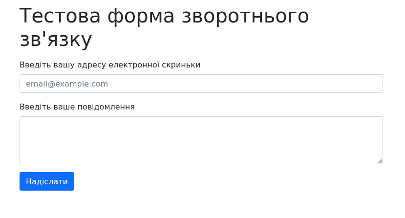

Постановка задачі лабораторної роботи №6
Тема:
WEB-сервери та принципи їх роботи з користувачем. Серверні WEB-застосунки.
Мета: Здобути практичні навички встановлення та конфігурування WEB-сервера.
Місце розташування лабораторних робіт
Встановлення та налаштування WEB-серверу
В якості мови програмування було обрано мову python з модулем flask. Flask має вбудований development server, який можна використовувати при досить низькому навантаженню.
Кроки та скріншоти встановлення веб-сервера:
1. Оновлюємо список доступних пакетів та встановлюємо пакети:
software-properties-common, curl, python3.10 python3-pip python3.10-distutils
2. Клонуємо репозиторій ubook.
3. Встановлюємо залежні пакети
4. Встановлюємо значення змінних оточення
5. Запускаємо веб-сервер
Форма зворотнього зв'язку
Код форми зворотнього зв'язку
{% extends "base.html" %}
{% block include %}
{{ super() }}
<link href="{{ url_for("static", filename="css/labs/style.css") }}" rel="stylesheet">
{% endblock %}
{% block content %}
<h1 class="mb-3">Тестова форма зворотнього зв'язку</h1>
<form method="POST">
<div class="mb-3">
<label for="formControlInputEmail" class="form-label">Введіть вашу адресу електронної скриньки</label>
<input type="email" name="email" class="form-control" id="formControlInputEmail"
placeholder="email@example.com">
</div>
<div class="mb-3">
<label for="formControlInputMessage" class="form-label">Введіть ваше повідомлення</label>
<textarea class="form-control" name="message" id="formControlInputMessage" rows="3"></textarea>
</div>
<div>
<button type="submit" class="btn btn-primary mb-3">Надіслати</button>
</div>
</form>
{% endblock %}
Висновки
В процесі виконання роботи було отримано практичні навички зі встановлення та налаштування WEB-серверу. З використанням мови python та фреймворку flask було розроблено форму зворотнього зв'язку, для демонстрації зв'язку з сервером.